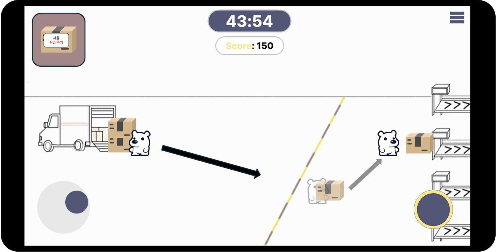

컨셉 기획_하차 미니게임 플레이 루프
플레이 목표
- 택배차에서 내려온 택배를 배송지역이 같은 컨베이어 벨트로 옮겨, 제한 시간 60초 안에 높은 스코어를 얻는 미니게임입니다.
-
단순한 운반 반복에 그치지 않도록 세 가지 판단을 겹쳤습니다.
-
얼마나 들까: 한 번에 여러 개를 들면 이동 횟수가 줄지만, 든 무게만큼 느려진다. 무거운 택배일수록 바르게 놓았을 때 점수가 크다.
- 어디에 놓을까: 송장 라벨의 배송지역과 벨트의 배송지역이 맞으면 점수를 얻고, 틀리면 점수를 잃는다.
- 어떤 순서로 놓을까: 취급 주의 택배는 여러 개를 들었을 때 반드시 마지막에 놓아야 한다.

한 판의 진행 순서
| 단계 | 플레이어 입력 | 시스템 처리 |
|---|---|---|
| 자동 하차 | 없음 | 3초마다 택배 1개를 하차 영역에 쌓고, 미리보기를 다음 택배로 바꾼다. |
| 택배 들기 | 하차 영역에 다가가 상호작용 버튼(PC: Space) | 하차 영역의 가장 위 택배를 든다. |
| 운반 | 조이스틱(PC: W, A, S, D) | 이동 가능 영역 안에서 X, Y축으로 자유롭게 움직인다. 든 무게만큼 느려진다. |
| 택배 놓기 | 배치 영역에 다가가 상호작용 버튼(PC: Space) | 든 택배 중 가장 위의 택배를 벨트에 올리고 스코어를 계산한다. |
| 종료 | 없음 | 타이머가 0이 되면 즉시 끝내고 결과창을 연다. |
화면 구성 요소
| 요소 | 역할 |
|---|---|
| 하차 택배 미리보기 | 다음에 하차될 택배의 정보와 하차까지 남은 시간을 보여 준다. |
| 타이머 | 게임 종료까지 남은 시간을 표시한다. |
| 스코어 보드 | 현재까지 얻은 누적 점수를 표시한다. |
| 옵션 버튼 | 화면 오른쪽 위에 둔다. 세부 기능은 따로 설계한다. |
| 하차 완료 택배 | 자동 하차된 택배가 쌓이는 영역으로, 최대 5개까지 쌓인다. |
| 이동 조이스틱, 상호작용 버튼 | 모바일 조작 UI다. PC에서는 키보드로 대신하고 화면에 표시하지 않는다. |